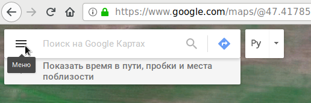
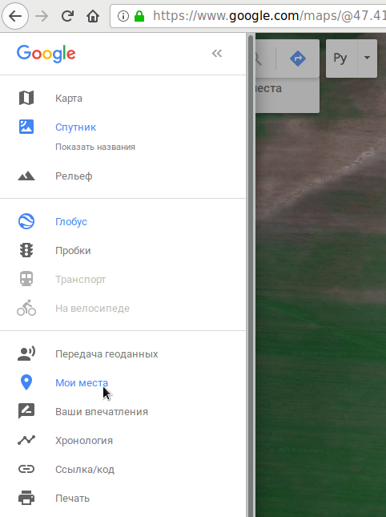
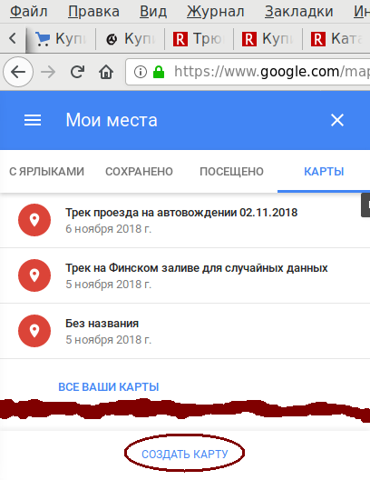
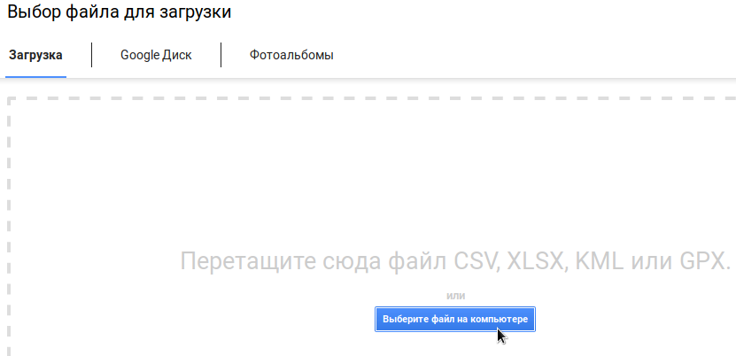
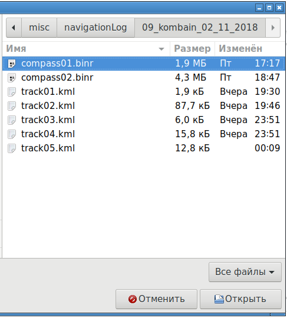
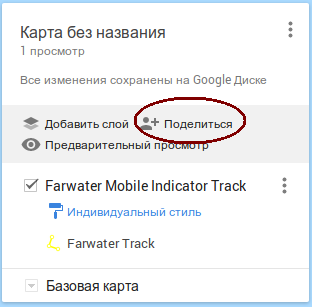

Создание треков через браузер
Для того, чтобы иметь возможность создавать треки, необходимо наличие аккаунта Google. Вначале нужно перейти на сайт:
https://maps.google.com
Появится карта примерно того района, откуда совершен выход в интернет.
Далее надо нажать на кнопку меню:

Далее надо выбрать пункт "Мои места". Если входа в аккаунт Google еще не было произведено, произойдет запрос логина/пароля:

Появится меню "Мои места", в нем надо переключиться на вкладку "Карты". Внизу будет кнопка "Создать карту"

В результате откроется новое окно браузера с начальной картой:
Чтобы задать осмысленное имя карты, можно кликнуть на заголовок "Карта без названия". Там можно задать название карты и её описание. Для создания трека надо нажать на кнопку "Импорт". Появится окно выбора файла:

В данном окне можно нажать кнопку "Выберите файл на компьютере" и появится традиционное окно выбора файла:

В результате будет создан трек из KML файла:

Чтобы другой человек мог посмотреть данный трек, нужно нажать на кнопку "Поделиться":
